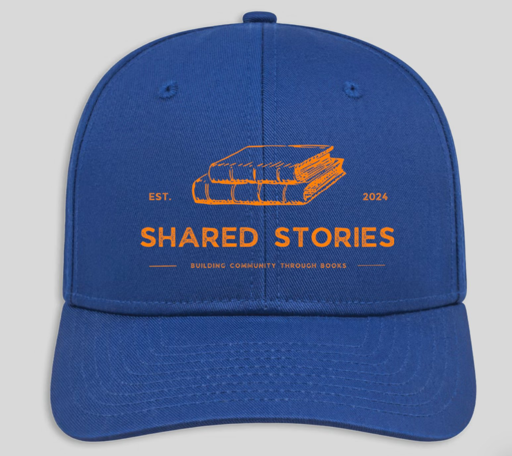
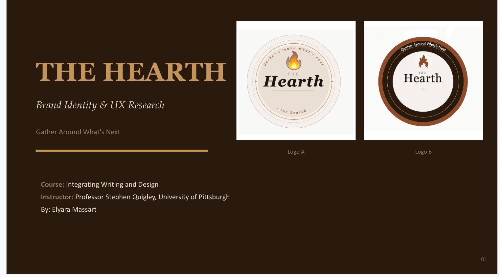

Long Form
Ten-page Spread

A ten-page magazine spread titled the Digital LookBook — a curated celebration of digital illustration and fashion-forward art. This project built on the two-page spread assignment, pushing my understanding of multi-page layout, typographic consistency, and how to guide a reader through a longer editorial experience.
Client Project

A branded merchandise design for Shared Stories, a bookstore built around the idea of building community through books. The brief called for a baseball cap design that captured the store's identity — the result pairs a bold royal blue with orange typography and a stacked books illustration, creating something wearable that doubles as a brand statement.
UX Design Branding Project

A full UX branding project for Hearth — an original company concept I developed to support independent artists by handling the business side so they can focus on their craft. This project involved brand identity, UX design, and a presentation outlining the company's vision, values, and user experience strategy.